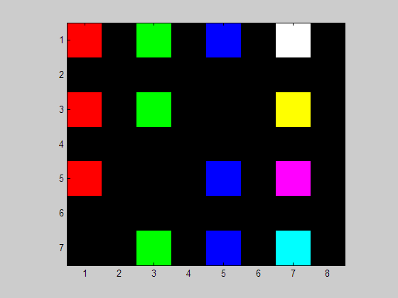

Contents
RGB
Red Green, Blue (Rouge, vert bleu)
Le script ilustre le système RGB des couleurs primaires et secondaire
clear all; close all; clc
Création d'une matrice A
7 lignes, 8 col., 3 plans
Les pixels sont représentés par des entiers non signé ayant 1 octet ou 8 bits.
A = uint8(zeros(7,8,3)); % A(:,:,1) les rouges % A(:,:,2) les verts % A(:,:,3) les bleus % 256 tons de chacun (2^8), 8 bits % 256*256*256 couleurs % Valeur d'un élément : % 0 indique un luminophore éteint (noir). % 255 est l'intensité maximale. A(1,1,1)= 255; % rouge A(1,3,2)= 255; % vert A(1,5,3)= 255; % bleu A(1,7,1:3)=255; % blanc A(3,1,1)= 255; % rouge A(3,3,2)= 255; % vert A(3,7,1:2)=255; % jaune A(5,1,1)= 255; % rouge A(5,5,3)= 255; % bleu A(5,7,1)=255; A(5,7,3)=255; % magenta A(7,3,2)= 255; % vert A(7,5,3)= 255; % bleu A(7,7,2:3)=255; % cyan % Ce sont aussi les couleurs proposées par plot.
Affichage
image(A);axis image

fprintf('A contient 3 matrices\n\n') % Il y a 3 matrices (R G B) Rouge = A(:,:,1) Vert = A(:,:,2) Bleu = A(:,:,3) fprintf('\n') whos A
A contient 3 matrices
Rouge =
255 0 0 0 0 0 255 0
0 0 0 0 0 0 0 0
255 0 0 0 0 0 255 0
0 0 0 0 0 0 0 0
255 0 0 0 0 0 255 0
0 0 0 0 0 0 0 0
0 0 0 0 0 0 0 0
Vert =
0 0 255 0 0 0 255 0
0 0 0 0 0 0 0 0
0 0 255 0 0 0 255 0
0 0 0 0 0 0 0 0
0 0 0 0 0 0 0 0
0 0 0 0 0 0 0 0
0 0 255 0 0 0 255 0
Bleu =
0 0 0 0 255 0 255 0
0 0 0 0 0 0 0 0
0 0 0 0 0 0 0 0
0 0 0 0 0 0 0 0
0 0 0 0 255 0 255 0
0 0 0 0 0 0 0 0
0 0 0 0 255 0 255 0
Name Size Bytes Class Attributes
A 7x8x3 168 uint8